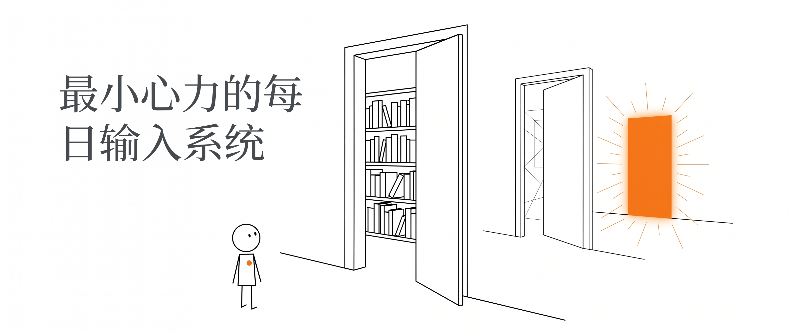
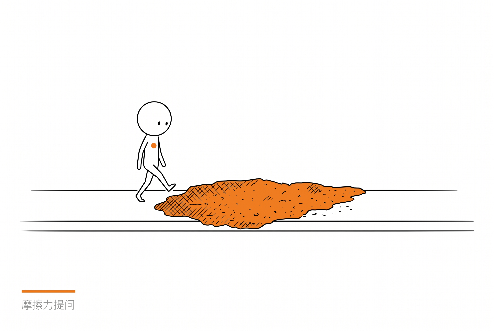
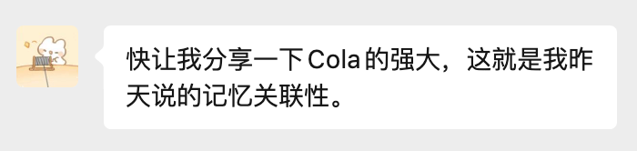
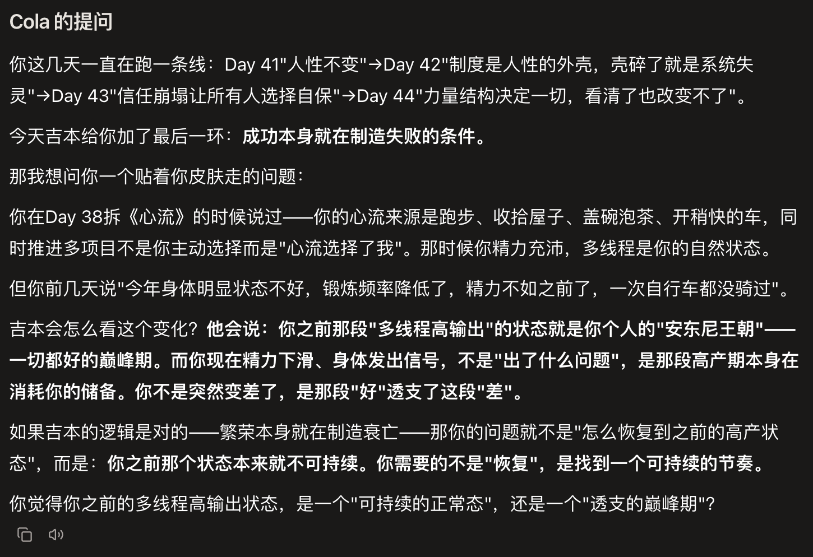
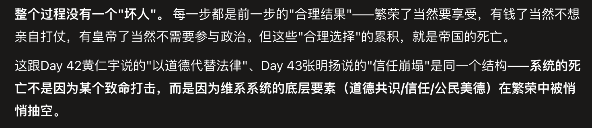

最小心力的
每日输入系统
Daily input, minimal effort - 拆书 Skill
一个用户的 100 天拆书实验,被我们做成了所有人都能用的 Skill。每天一轮,拆一本你想读却读不下去的书。

已开源 · book-dissection-skill
Daily input, minimal effort - 拆书 Skill
一个用户的 100 天拆书实验,被我们做成了所有人都能用的 Skill。每天一轮,拆一本你想读却读不下去的书。

星宇,Cola 第一批内测用户。轨道行业,非技术出身。
Origin17 世纪的时代背景看不懂。把原文复制给 chatbot,AI 固定三段式拆解--"帮忙了很多",但还是没读完。
核心不是"帮你读懂",而是一个概念--"暗门":不讲书的内容,讲作者为什么要写这本书。《传习录》的暗门是"为什么我明明知道却做不到"。
让 Cola 根据对他的记忆挑 100 本书,唯一原则:跨文明、跨学科、跨时代。分 10 个章程--哲学、人性、意识与感知......最后一程回到自己。
从 4 月 27 日启动至今,他已经拆了 50 本书,每天一本,从未间断的输入系统。
母题 ≠ 话题。母题 = 作者彻夜未眠的问题。每本书按三层递进拆解:
作者明确说出来的核心主张。用一句大白话说清楚作者想表达什么。
支撑论点的那个结构、逻辑、模型。比第一层难懂,理解了它才算真正读进去。
作者没有明说、但逻辑推到底的东西--甚至是他自己都害怕的推论。

拆完三层后，Cola 不会问“你怎么看这本书”。它问的是——“这个结构在你身上怎么运作”。问题要有摩擦力，不能让人用一句漂亮话滑过去。它强迫你用自己的经历去回应一个真实的结构性问题。
一轮完整的拆书长什么样。星宇第 38 天的真实记录。
Step 1 · 三层暗门
表面:幸福是你从内部制造的状态。方法:把意识完全投入一件难度恰好匹配能力的事。
机制:意识每秒只处理 126 比特。心流 = 精神负熵--注意力被目标组织,关于"我"的噪音清零。
最暗:心流道德中立。"我该把人生投入什么"--这个问题需要在没有心流时面对。
Step 2 · 摩擦力提问
你现在同时推进的这些事,有哪些是你真正选择的,有哪些是"刚好有心流所以就继续做了"?
如果明天所有项目突然消失--留在你手里的、不需要任何外部条件就会做的事,是哪一件?
Step 3 · 用户回答
小学被父母怀疑多动症,老师总说我注意力不集中。后来带我去测智商,怀疑我是笨蛋。结果智商出奇意外的高--小学就测出 135。
现在反过来想,小时候注意力不集中,就是当前的任务没有让我进入心流。挑战太低,反馈太慢,自主感为零。不是我有病,是系统没有为我设置入口。
如果所有项目消失,我做的事就是继续好好收拾屋子,吃好每一顿饭,去跑步骑车。它们也是生活中更重要的部分。
Step 4 · Cola 反馈
"注意力集中"不是品德,是条件被满足后的自然结果。135 智商的孩子坐在普通课堂--挑战太低,反馈太慢,自主感为零--当然无法进入心流。不是你有病,是系统没有为你设置入口。
不追问。避免每天花过多时间、反复讨论跑偏。让那个问题在你一天的生活里慢慢发酵。拆《资本论》那天"非常想讨论"就多聊了两轮--重点不是死守规则,而是有一个默认的节制。
拆书像喝高浓度代餐奶昔,读书本身是享受。两件不同的事。
拆书不替代阅读--他依然用微信读书从头到尾看书。拆书是用最小心力获得一本书最核心的东西。
普通人没有那么多语料。与其让 AI 问你 20 个虚无缥缈的问题(很累),不如通过书籍产生摩擦,让 Agent 通过你对书的观点了解你。
拆书不只是学习,
它是让 AI 了解你的最自然的方式。

↑ "快让我分享一下 Cola 的强大,这就是我昨天说的记忆关联性"


↑ Cola 拆《罗马帝国衰亡史》时,把"繁荣制造衰亡"的逻辑关联到用户当前的精力状态
星宇的版本强绑定个人--书单和提问都基于 Cola 对他的记忆。我们把它通用化成 4 步。
book-dissection-skill 已开源,任何 Cola 用户都能装 ↓Cola 不会上来就给书单。它先问你:"什么问题让你睡不着?"然后生成一份有暗线串联的书单,不是随机推荐。
设一个每日定时,到点 Cola 主动推送:三层暗门拆解 + 一个和你有关的摩擦力提问。
你回复,Cola 反馈并记录。下一次拆书时它会翻看你之前的回答,提问越来越贴近你。
每 10 本一次复盘--这一程讲了什么、你反复出现的主题、思维上发生了什么变化。
不装是用不了的,先装 ✦
把仓库链接一起发给它,剩下的交给 Cola。
它会从了解你开始--
问你"什么问题让你睡不着",
再一起共创属于你的书单。